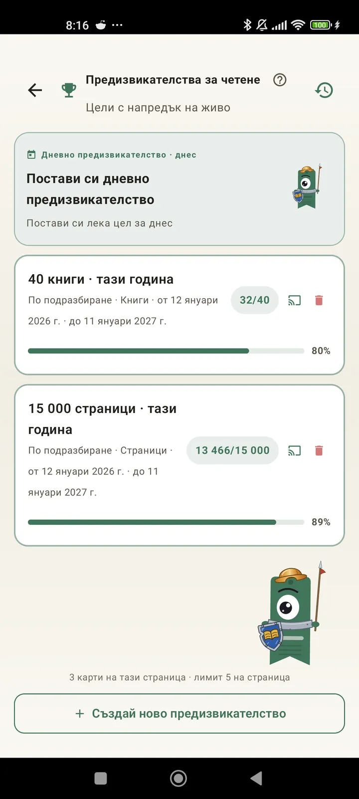

Опознай себе си като читател
Предизвикателства, Bingo, уиджети и още функции, за да извлечеш максимума от четенето. Ново в 3.7: уиджети за предизвикателства и Bingo.

Предизвикателства за четене
Задай цели по страници, серии или жанрове. До 15 активни предизвикателства безплатно, неограничено с Pro. Плюс дневно предизвикателство по твой избор, което не се брои към лимита.

Дневно предизвикателство
Нова цел всеки ден. Изпълни предизвикателството преди полунощ, за да запазиш серията си.

Четене с Bingo
Две нови Bingo карти всеки месец с тематични полета. Попълни редове, колони или цялата карта.

Седмично резюме
Всеки понеделник – поглед към седмицата ти: прочетени страници, общо време, серия и сравнение с предишната.

Месечно резюме
Когато месецът свърши, Lecturameter го обобщава: страници, време, завършени книги, темпото ти ден по ден и книгата на месеца.

Уиджет за Bingo Pro
Bingo картата за месеца, винаги пред очите ти, с попълнените полета и направените линии.

Уиджет за книга Безплатно
Виж книгата, която четеш, направо на началния екран: корица, заглавие, автор, страници и процент напредък, винаги актуални. Можеш да го оразмериш, за да пасне където искаш.
Сериозно, брат, приложението е като терапия. Минах от няколко страници на ден на около 20 страници на ден и продължавам да се подобрявамОтзив от потребител, изпратен по имейл

Месечно сравнение Pro
Бърз поглед към последните ти месеци, без да отваряш приложението. Стълбове със страниците за всеки месец и открояване на текущия, за да видиш веднага дали този месец се справяш по-добре или по-зле от миналия.

Уиджет за предизвикателства Pro
Активните ти предизвикателства и напредъкът им на началния екран. Избери кои да се показват от екрана Предизвикателства.